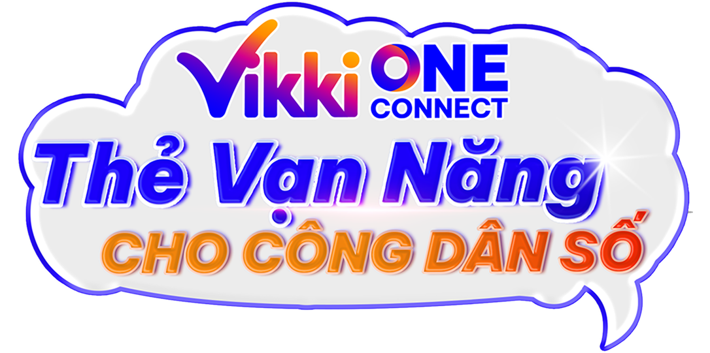

là thẻ nhân viên và sinh viên đa năng do ngân hàng số Vikki phát hành, tích hợp định danh, quản lý nhân sự, thanh toán và tín dụng quốc tế Mastercard trong một chiếc thẻ duy nhất. Đây là giải pháp hiện đại giúp doanh nghiệp, trường học và tổ chức chuyển đổi sang môi trường quản lý và thanh toán không tiền mặt, đồng thời mang lại trải nghiệm tài chính tiện lợi, linh hoạt cho người sử dụng.
Không chỉ là thẻ định danh thông thường, được thiết kế như một “trợ lý số” trong đời sống hằng ngày. Thẻ có thể sử dụng để điểm danh, chấm công, kiểm soát ra vào tại cơ quan hoặc nhà trường, giúp quản lý nhân sự và sinh viên một cách tự động, minh bạch và chính xác. Việc tích hợp nhiều chức năng trong một chiếc thẻ giúp giảm thủ tục giấy tờ, tiết kiệm chi phí vận hành và nâng cao hiệu quả quản lý cho tổ chức.
Bên cạnh đó, còn là thẻ thanh toán không tiền mặt và thẻ tín dụng quốc tế, được chấp nhận tại hàng triệu điểm giao dịch trong và ngoài nước. Người dùng có thể dễ dàng thanh toán mua sắm, đặt vé máy bay, du lịch, học tập hay sử dụng các dịch vụ trực tuyến một cách nhanh chóng, an toàn. Tất cả giao dịch được quản lý thuận tiện trên ứng dụng Vikki, giúp người dùng theo dõi chi tiêu, kiểm soát tài chính và chủ động hơn trong kế hoạch cá nhân.
Đối với doanh nghiệp và nhà trường, một nền tảng quản lý tài chính và phúc lợi tập trung. Lương, học bổng, phụ cấp và các khoản hỗ trợ có thể được chuyển trực tiếp vào thẻ, giúp giảm thiểu thủ tục, tăng tính minh bạch và đảm bảo sự thuận tiện cho người nhận. Đồng thời, các chương trình ưu đãi, tích điểm SkyJoy và dịch vụ tín dụng linh hoạt giúp nhân viên và sinh viên tiếp cận các tiện ích tài chính hiện đại với chi phí hợp lý.
không chỉ là một chiếc thẻ, mà là một nền tảng kết nối giữa quản lý, tài chính và cuộc sống số. Một chiếc thẻ đa năng thông minh – giúp doanh nghiệp và nhà trường chăm lo tốt hơn cho nhân sự và sinh viên, đồng thời mang lại sự tiện lợi, chủ động và hiện đại trong từng giao dịch mỗi ngày.